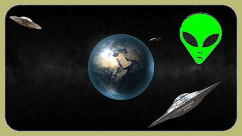

|
Bicy Gonzo, la sémantique générale appliquée à la bicyclette
Don't ride on the rim ; take it easy
Voyage à travers le présent.
More bicycle than the bicycle.
Life is a journey and not a destination.
Infos sur le site : Bicy Gonzo offre une approche pseudolittéraire de la bicyclette et de la bicylittérature ; Bicy Gonzo s'inspire de la ParaBicychologie. La parabicychologie propose une approche pluridisciplinaire de phénomènes mettant en jeu le bicychisme - ensemble, conscient ou inconscient, considéré dans sa totalité ou partiellement, des phénomènes, des processus relevant de l'esprit cycliste, de l'intelligence cycliste et de l'affectivité cycliste - et son interaction avec l'environnement. Ces phénomènes relèvent des phénomènes Bicy. Considérée sans doute dans les milieux scientifiques comme une pseudo-science, l'existence de l'objet d'étude de la parabicychologie démontre par la même l'existence de celle-ci. La parabicychologie ouvre les portes vers les horizons nouveaux des chemins vicinaléatoires de la pédalée cosmique et véli-vélo. Nous ne saurions trop recommander la lecture du Livre de Bicyclette : Le Troisième Policier, de Flann O'Brien ; lien sur Wikipedia ( anglais, l'article en français étant trop superficiel. De même nous ne saurions trop vous recommander l'apprentissage de l'anglais qui vous permettra la lecture de ce chef-d'oeuvre dans sa langue originale. ) Le Troisième Policier représente pour la parabicychologie ce que les ouvrages - notamment Un mythe moderne « des signes du ciel » - de Carl Jung représentent pour la psychologie analytique et l'ufologie.
Table des contenus :
Littérature cycliste : les ouvrages que nous avons traduits. Pour accéder à l'index des oeuvres que nous avons traduites, rendez-vous sur notre page > > littérature cycliste Littérature NON cycliste : les ouvrages que nous avons traduits. Pour accéder à l'index des oeuvres que nous avons traduites, rendez-vous sur notre page > > littérature NON cycliste
Albums Photos :
Divers :
|
| ADMINISTRATIVIA Dernière mise à jour de cette page : juil 201. p-v* URL : http://orkic.github.io/bicygonzo Contactez-nous : Contact * p-v : post-visitation |
Site développé en collaboration avec Brothel & Cie inc.® ™ sur cyberdeck : Ono-Sendaï Cyberspace-11, O.S * : Hypercloud 7.4, browser-text.edit ** : StalkXplorer e-Intelligence 9.3
* Yoyodyne H.D div. (Yoyodyne Hardware Development division) produit Hypercloud. ** Yoyodyne W.R div.( Yoyodyne Web Research division ) produit StalkXplorer. Yoyodyne H.D et Yorodyne W.R font partie de Yoyodyne corporation.

A site from Outerspace Publishing
Website © Copyright - ef. Bicy Gonzo.